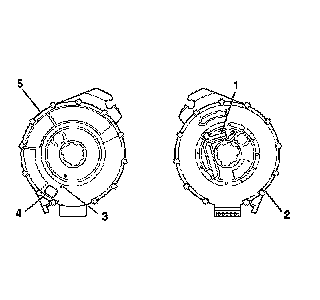
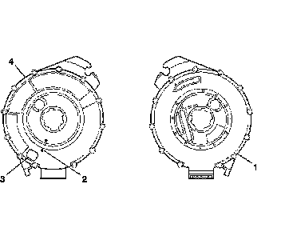
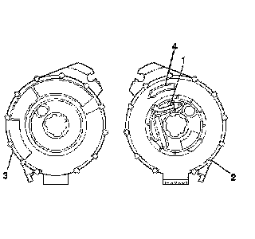
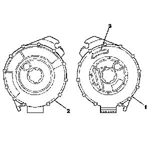

Procedures
Inflatable Restraint Steering Wheel Module Coil Centering
Notice: The new SIR coil assembly will be centered. Improper alignment of the SIR coil assembly may damage the unit, causing an inflatable restraint malfunction.

1. Verify the following before centering the inflatable restraint steering wheel module coil:
* The wheels on the vehicle are straight ahead.
* The block tooth (1) of the upper steering shaft is in the 12 o'clock position.
* The ignition and start switch is in the LOCK position.

2. If the front (5) of the inflatable restraint steering wheel module coil has a centering window (4), and on the back side (2) a spring service lock (1), perform the following steps:
1. Hold the coil with the face (5) up.
2. While depressing the spring service lock (1), rotate the coil hub clockwise until the coil ribbon stops.
3. Rotate the coil hub slowly, counterclockwise, until the centering window (4) appears yellow and both arrows (3) line up.
4. Release the spring service lock (1) between the locking tab. The coil is now centered.
5. Align the centered coil with the turn signal switch cancel cam and it slide onto the upper steering shaft.

3. If the front (4) of the inflatable restraint steering wheel module coil has a centering window (3) and no spring service lock on the back side (1), perform the following steps:
1. Hold the coil with the face (4) up.
2. Rotate the coil hub clockwise until the coil ribbon stops.
3. Rotate the coil hub slowly, counterclockwise until the centering window appears yellow and both arrows (2) line up. This is the CENTER position.
4. While holding the coil hub in the CENTER position, align the coil with the turn signal switch cancel cam and slide it onto the upper steering shaft.

4. If no centering window is present on the front side (3) of the inflatable restraint steering wheel module coil, but a spring service lock (1) is on the back side (2), perform the following steps:
1. Hold the coil with the back side (2) up.
2. While depressing the spring service lock (1), rotate the coil hub in the direction of the arrow (4) until the coil ribbon stops.
3. Still pressing the spring service lock (1), rotate the coil hub in the opposite direction 2 1/2 revolutions.
4. Release the spring service lock (1) between locking tabs. The coil is now centered.
5. Align the centered coil with the turn signal switch cancel cam and slide it onto the upper steering shaft.

5. If there is no centering window on the front side (2) of the inflatable restraint steering wheel module coil and no spring service lock on the back side (1), perform the following steps:
1. Hold the coil with the face (2) up.
2. Rotate the coil hub in the direction of the arrow (3) until the coil ribbon stops.
3. Rotate the coil hub, slowly, counterclockwise, for 2 1/2 revolutions. This is the CENTER position.
4. While maintaining the coil hub in the CENTER position, align it with the turn signal switch cancel cam and slide it onto the upper steering shaft.